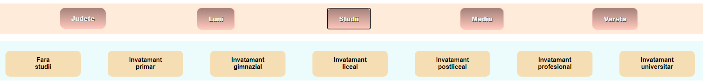
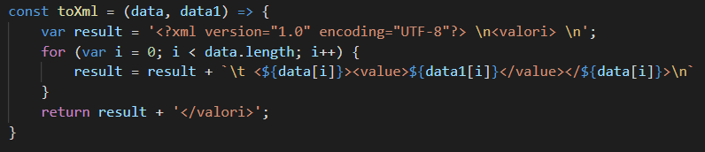

AUTORI
- Octavian-Paul L.D. Ungureanu
- Ionut-Catalin I. Hazi
- Andrei-Marian A.N. Mireuta
Link-ul la care a fost hostat site-ul:
https://runda123.herokuapp.com/
Link catre prezentarea funcionalitatii site-ului:
https://www.youtube.com/watch?v=Ab575nFGXxQ
Ghidul utilizatorului
Pagina principala a site-ului contine titlul, numele autorilor si doua butoane.
-Primul buton te derirectioneaza la pagina cu documentatia aplicatiei;

-Iar al doilea buton te trimite la pagina unde se afla functinalitatile aplicatiei;
Pe ascta pagina, in partea de sus veti intalni o bara pe care se afla butoanele pentru filtrarea categoriilor de someri.
La apasarea butonului "Judete", sub acesta va aparea un panou cu toate judetele tarii si unul, situat sub bara de butoane, in care vor aparea judetele selectate,
impreuna cu un buton "stergeti", care la apasare va sterge toate judetele selectate.
O alta varianta de a elimina selectarea unui judet este prin simpla apasarea a judetului respectiv din panul de sub bara de butoane.
La apasarea butonului "Luni", in acelasi panou in care apareau judetele selectate, vor aparea 12 butoane cu lunile anului. La selectarea uneia(apasarea butonului),
butonul isi va schimba culoarea, iar la deselectarea lui culoarea va reveni la cea initiala.
Cand selectam butonul "Studii", in panoul de sub acesta vor aparea 7 butoane cu diferite nivele de studii. La selectarea unuia, acesta isi shimba culoarea, iar la apasarea
altuia butonul apasat initial se deselecteaza, culoarea revenind la cea initiala. O alta metoda de deselectare a unui buton este reapasarea acestuia.

Idem se va intampla si la apasarea butonului de "Mediu" sau "varsta".

Orice filtru se aplica doar in momentul in care este selectat, ramanand valabile pentru toate doar filtrul de judete sau lunile anului. In cazul in care niciunul dintre acestea
nu este selectat diagrama va afisa datele pentru toate cele 12 luni.
Dupa selectarea filtrelor, trebuie selectat modul de afisare a datelor, care vor aparea in panoul din centru.
La apasarea buponului "Pie", datele vor fi afisare intr-o diagrama de tip pie:
Pentru butonul "Line" va aparea o diagrama de tipul line
Iar pentru "Bar" diagrama va fi de tipul bar
La apasarea butonului "Harta", pe panou va aparea harta cu judetele romaniei, in care, la trecerea cursorului pestr un judet anume, in coltul din dreapa sus va aparea numarul
somerilor.

Pentru descarcarea datelor aflate in diagrama exista butonul "Descarca" care la apasare va deschide deasupra sa o lista cu 4 moduri de descarcare a datelor. La apasarea unuia
dintre ele un fisier de acel tip se va descarca in dispozitivul dumneavoastra.
Introducere in site si functionalitati
RUnDa (Romanian Unemployment Data Visualizer) este un site care pune la dispozitia utilizatorilor date statistice legate de somajul din romania pe o
durata de 12 luni.
Pentru a facilita accesarea mai usoara a informatiilor, site-ul nostru va pune la dispozitie posibilitatea selectarii ratei somajului doar in sectorul vostru de
interes. Astfel ca puteti selecta mai multe luni ale anului, mai multe categorii de varsta(mia mic decat 15,25-29), nivele de studii(fara studii, invatamant primar),
judete si mediul de provenienta(rural sau urban), filtrele putand fi combinate(in functie de lunile anului si judete).
Diagrama aplicatiei
Paginile site-ului:
1.Pagina principala
Pagina principala a site-ului este simpla fiind alcatuita din 3 elemente:
- Titlul Paginii, “Nivelul somajului in Romania”
- Doua butoane
-“Descrierea site-ului”, care duce la documentatia proiectului
-“Sa incepem!”, careduce la pagina cu datele despre somaj
- Numele Autorilor
La deschiderea site-ului titlul acestuia se mareste, revenind ulterior la o marime mai mica:
Butoanele sunt de tip hover, iar cand cursorul ajunge deasupra unuia, acesta isi schimba culoarea, atat a butonului, cat si a scrisului, treptat:
Numele noastre sunt scrise tip glowing, fiecare din acestea stralucind pe rand, la o distanta de 0.5 secunde

2.Pagina secundara
Pe aceasta pagine se gasesc principalele functionalitati ale site-ului, toate informatiile cautate
de utilizator legate de somajul din Romania.
Pagina secundara este alcatuita din 3 parti:
- Bara pentru selectarea categoriilor de interes (filtrarea rezultatelor)
- Panoul de afisare a informatiilor
- Bara pentru selectarea modului de afisare a informatiilor si descarcarea acestora
- • Bara pentru selectarea categoriilor de interes
Pe aceasta bara sunt pozitionate 5 butoane pentru filtrare informatiilor afisate in panoul cu statistica. Butoane pentru selectarea: judetului, lunii anului, studiile
somerilor, mediul de provenienta(rural/urban) si varsta acestora.
1.Butonul pentru selectarea judetelor este de tip “dropdown”, la apasarea lui, sub acesta va aparea o lista verticala cu jutetele tarii, in ordine alfabetica, cu
optiunea de cautare a judetului prin scriere.
Prin selectarea unui judet, acesta va aparea intr-un nou panou, in care vor aparea toate judetele selectate pana in acel moment, plus un buton pentru deselectarea tuturor
judetelor selectate, existand si posibilitatea deselectarii unui singur judet prin apasarea pe acesta.
Pentru aceasta am folosit:
Unde functiile myFunction(), showDivJud(), showJud(judet), disappear(judet), disappearAll():
2.Butoanele pentru lunile anului, nivele de studii, mediul de provenienta si categoria de varsta sunt asemanatoare.La apasarea unuia, va aparea un panou sub bara de
butoane (ca la precedentul buton) unde se afla butoane pentru fiecare luna a anului, pentru fiecare nivel de studiu, mediu sau pentru fiecare categorie de varsta. La
apasarea acestora ele raman selectate, fiind marcate prin schimbarea culorii butonului. Pentru deselectarea unuei anumite luni este neceara reapasarea butonului cu numele
respectiv, care isi va schimba culoarea la loc.
Pentru aceasta am folosit:
Unde functiile showDivStudii(), showDivLuni(), showDivMediu(), showDivVarsta(), changeColorMonth(luna), changeColor(buton):
changeColor(buton)-pentru fiecare buton din panou apasat schimba culoarea acestuia.
- • Panoul de afisare a informatiilor
Aici vor aparea diagramele legate de nivelul somajului, in functie de modelul selectat din bara pentru diagrame.
Initial pe acest panou apare scris mare “Selecteaza modul de afisare a datelor”
Urmand ca dupa selectarea unui mod de afisare sa apara diagrama
- • Bara pentru selectarea modului de afisare a informatiilor si descarcarea acestora
Aici se gasesc 3 butoane pentru afisarea datelor, pie, line si bar, un buton pentru afisarea hartii romaniei si un buton pentru descarcareadatelor.
1.Butoanele “PIE”, “LINE” si “BAR” afiseaza pe panou o diagram de tip numelui lor in care se pot vedea datele legate de somaj, dar filtrate din bara pentru selectarea
categoriilor de interes.
Unde selectChart(numar) selecteaza tipul de diagrama, iar showDivPie()/showDivLine()/showDivBar() afiseaza diagrama
2.Butonul “HARTA” afiseaza pe panou o harta a Romaniei in care, prin trecerea cursorului deasupra unui judet, in coltul din dreapta sus apare o eticheta cu datele
legate de somaj in acel judet, trecute prin fistrele selectate anterior, dar ignorand filtrele ce tin de judetele tarii.
Unde showDivMap() afiseaza harta in panou.
3.Butonul “DESCARCA” este de tip dropdown iar la trecerea cursorului peste acesta apar variantele de documente in care pot fi descarcate diagrama din panou (PDF, CSV,
SVG, XML).
Pentru download am folosit niste functii scrise in JavaScript. Vom analiza fiecare modalitate de download in parte:
Pentru CSV: am luat valorile si ce lunile selectate (sau judetele, dupa caz) si am pus totul intr-o variabila, apoi parsand aceasta variabila am creat un string cu
valorile separate prin virgule. Apoi am pus acest string in fisier-ul csvData.csv care se va descarca direct.
Pentru XML: am procedat la fel ca in cazul CSV-ului doar ca acel string in loc de virgule intre valori, a fost formatat astfel incat sa includa tag-uri si cele necesare
pentru a fi un fisier XML.

Pentru PDF: am utilizat jsPDF pentru a putea pune string-ul intr-un fisier PDF:
Pentru SVG: am folosit canvas2svg si redesenat practic graficul ca svg folosind aceasta librarie. Apoi am exportat rezulatul:
Partea de back-end
Pentru partea de backend am folosit PHP. Am facut un serviciu GET, care in functie de parametrii primiti, returneaza valoarea din csv-uri, doar daca parametrii sunt corecti
si valoarea exista.
Serviciul testeaza mai intai daca metoda prin care este apelat este GET si apoi daca parametrii primiti nu sunt null, in caz ca nu se indeplinesc aceste conditii se
returneaza un cod de eroare si un mesaj corespunzator:
Apoi testeaza sa vada daca valorile parametriilor sunt conforme, adica daca exista acel judet, luna, etc.
Apoi se selecteaza exact csv-ul de cate avem nevoie, formandu-i mai intai path-ul, si apoi extragem datele din acesta:
Dupa aceasta, parcurgem datele din acel csv pana cand gasim judetul pe care il cautam noi, si selectam de pe acel rand, valoarea de care avem nevoie si o returnam, impreuna
cu statusul si codul corespunzator:
Acest serviciu este apelat din javascript, folosind functia de mai jos:
Rezulatele pe Measure:
https://web.dev/measure/Surse de inspiratie
Link-uri folosite:
• https://www.youtube.com/watch?v=Syg_9iB1vco&t=8s• https://www.youtube.com/watch?v=MLfAW55_4cY&t=177s
• https://www.youtube.com/watch?v=1B3FgFXn274
• https://profs.info.uaic.ro/~busaco/teach/courses/web/web-film.html
• https://www.chartjs.org/
• https://github.com/MrRio/jsPDF
• https://github.com/gliffy/canvas2svg
• https://gliffy.github.io/canvas2svg/ • https://gliffy.github.io/canvas2svg/
• https://stackoverflow.com/questions/45563420/exporting-chart-js-charts-to-svg-using-canvas2svg-js